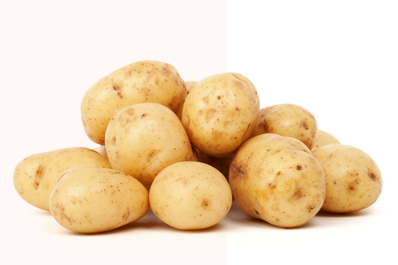

LASCIATI ISPIRARE
Patate alla brace con buccia
In una terra lontana, dietro le montagne Parole, lontani dalle terre di Vocalia e Consonantia, vivono i testi casuali.
Vivono isolati nella cittadina di Lettere, sulle coste del Semantico, un immenso oceano linguistico.
Scopri le altre ricette
RICETTE
Prova la nostra ricetta delle patate arrosto al timo!
